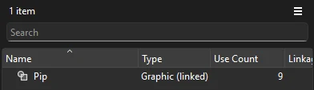
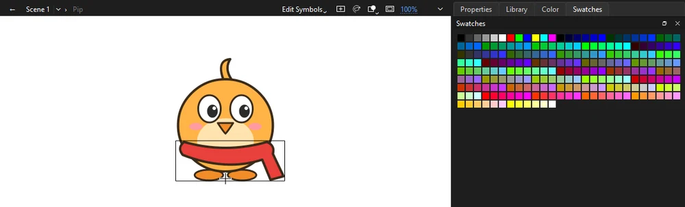

Tutorials
Linked master symbols
Keep a character in one master file and link it into a shot, then change the master and update the shot to match.
This page is also a lesson inside Phoenix: choose and start Linked master symbols, and Phoenix points at each control as you go. It takes about 8 minutes.
To follow along here instead, download the starting document, linked-masters.fla, and open it with . You make the master file from it yourself in step 2, so there is nothing else to download.
On a show, the same character appears in many shots. When the design changes, nobody wants to redraw it in every one. Instead, the character lives in a master file, and each shot links its copy to it. Change the master, update the shot, and the shot follows.
This document is a shot: Pip, a graphic symbol, hops across a meadow. You will make a master file for Pip, link the shot to it, play the art director and change the master, then bring the change into the shot.
1. Play it
Press Enter, or click the play button in the timeline header. Pip hops across in a red scarf.
2. Make the master file
Press Enter again to stop. A master is any file with Pip in its library, so the quickest way to make one is to save a copy of this document.
Choose . Make a new folder for the show, called Pip show (in your Documents folder, say), go into it, name the file Pip and click Save. The window's title now reads Pip.
3. Save the shot
Choose again, and save into the same Pip show folder as Shot 1.
The folder now holds two files: Pip, the master, and Shot 1, the shot you go on working in.
4. Link Pip to the master
In the Library panel, right-click Pip and choose Link to Master File.... Choose Pip in the Pip show folder and click Open. Phoenix lists the master's symbols with Pip already picked: click OK.

When Phoenix offers to update Pip from the master now, click No: the master is the same as the shot for now. In the Library, Pip's type reads Graphic (linked).
5. Save the link
If Phoenix is still asking whether to update Pip, click No.
Press Ctrl+S to save Shot 1. The link is saved in the shot, with the master's place written relative to it, so the Pip show folder can move as a whole.
6. Open the master
Now play the art director, who wants Pip in a blue scarf. Choose and open Pip from the Pip show folder. It opens in a tab of its own.
In the lesson inside Phoenix, the lesson window then asks you to go back to the lesson's tab. You will, in two steps; carry on here meanwhile.
7. Change the master
In the Pip tab, double-click Pip in the Library to edit the symbol. Press V for the Selection tool and click the red scarf.

Click the Swatches tab beside the Library (or choose ) and click a blue color. The scarf turns blue. Choose to save the master.
8. Back to the shot
Choose to close the master. You are back in Shot 1, and its Pip still wears the red scarf: a shot keeps its own copy of a linked symbol until you update it, so a change to the master never surprises you in the middle of a shot.
9. Update from the master
Click the Library tab. Right-click Pip and choose Update from Master. Phoenix warns that the update replaces Pip with the master's version and cannot be undone: click Yes.
Phoenix reports that Pip was updated; click OK. The scarf on the stage is blue, and Pip still hops exactly as before: only what is inside the symbol changed.
10. Play it
Press Enter. Pip hops across in the new blue scarf, on every frame of the shot.
What you did
You kept a character in a master file, linked a shot's copy to it, and brought a design change from the master into the shot. In the shot, Pip is still an ordinary symbol, so the shot opens and plays without the master; it only remembers where Pip came from.
A real master usually holds just the character, its rig and the symbols inside it; those come along on an update too. With many linked symbols, right-click anywhere in the Library and choose Update All Linked Items. Change Master File... links a symbol elsewhere, and Unlink from Master lets it go its own way.
To bring a change into a whole episode at once, update every shot from the command line: Phoenix batch "Pip show" --update-links --save (see Command line).
For everything this tutorial touches on, see Linked shared assets and The library.